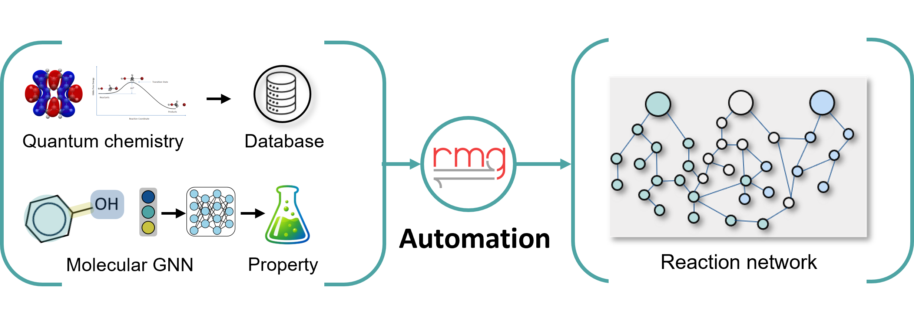

Kinetic information
Integrate available quantum-chemistry-derived reaction data and established kinetic databases.
Developing detailed chemical kinetic mechanisms for energy conversion by connecting quantum-chemistry-informed reaction data, automated mechanism generation, and experimental combustion evidence.

Approach / 01
Reaction mechanisms provide a molecular-scale description of a chemical system. I use automated mechanism-generation tools and carefully evaluated kinetic information to construct and validate mechanisms for ammonia-based fuel mixtures, then analyze how individual pathways shape emissions.
Explore overall research framework ↗Research workflow
Integrate available quantum-chemistry-derived reaction data and established kinetic databases.
Build and evaluate detailed reaction networks using the Reaction Mechanism Generator (RMG).
Validate kinetic predictions and investigate pathways governing NOₓ and other combustion products.
Applications
Detailed kinetics for NH₃/H₂ and NH₃/H₂/CH₄ fuel blends, emphasizing combustion behavior and pollutant formation.
Identify dominant chemical routes and evaluate how kinetic pathways change with mixture composition and operating conditions.
Related publications